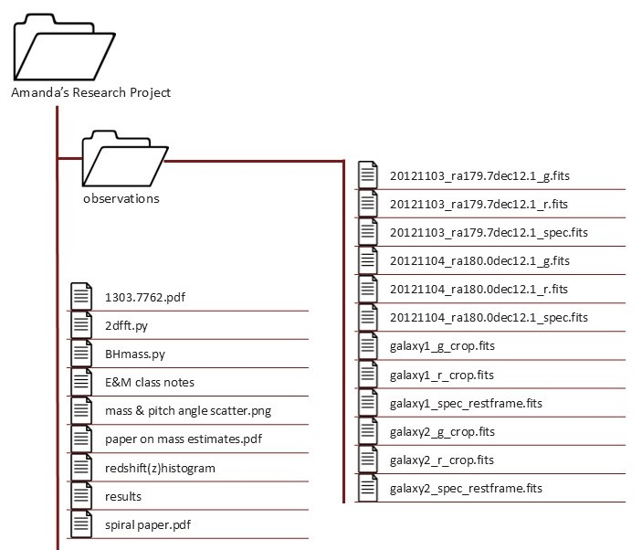

2. Planning for Success#
2.1. Start with the Scope#
At the beginning of a project, write a scoping document or research proposal describing your research question and the goals. The process of writing this document is an excellent way to clarify what you’re trying to achieve, ensure alignment among your collaborators, and identify potential problems or gaps early when they can be more easily addressed. Depending on your specific funding mechanism and discipline, a scoping document may also be required before you begin collecting data. Later, once you have your data, this document can help you and your collaborators explain the history of the project and the original reasoning for how you collected the data, your overall research design, and specific project goals.
Your scoping document can also be a powerful project management tool, helping you stay focused and organized as you work. It’s a good idea to establish a timeline in your document that includes the milestones you’d like to accomplish. The milestones should be specific, measurable, and concrete, so that you can easily tell when you’ve completed one. Be generous with yourself and your collaborators; it can be hard to predict the directions research will take you, and tasks that seem short (especially programming tasks) can end up taking longer than expected. It’s almost always better to finish a deliverable earlier rather than having to pivot to accommodate delays.
For projects that involve data analysis, incorporate into your scoping process necessary time to investigate your planned data sources. Sometimes a data set that seems promising can lack the exact features you need, have too few observations, have too much missing data, or otherwise be untenable for your planned research. If you are collecting the data yourself, make a plan for how you will collect the data. Describe what data sets will be available at the analysis stage, and how they will be recorded and need to be structured for analysis. Failure to do this may result in the need for extensive data restructuring or, in the worst case, unusable data.
During the process of writing your scoping document, consider whether there are any biases, ethical concerns, privacy concerns, licensing fees, or other issues that may influence your research. Include these, and how you will address them, in your research plan.
If you are submitting your scoping document as a grant or other formal research proposal, the organization you submit to may have specific structure requirements. If they don’t, or if you aren’t submitting your research proposal anywhere, consider the following as a potential outline for a scoping document:
Collaborators: Who is working on the project? Include where they work and how to get in touch with them. Typically this will include their email address.
Background Information: What does someone need to know to understand the goals of the project?
Project Duration: How long will the project take?
Data: What data sources will be used in the project? If there are ethical or privacy concerns about the data, outline them here and describe mitigation strategies. If you will be collecting data, what data will you collect and how?
Statement of Work and Milestones: Who will do what by when? This is a good place to describe key deliverables and associated milestones you expect to accomplish, with approximately when they will be achieved.
Collaborator Responsibilities: Additional responsibilities outside the statement of work can go here, like who will complete periodic stakeholder updates and funder reports, or who brings the donuts to the team meetings. :)
Project Deliverables: What is the final product of the project? This could be a publication, website, piece of software, infographic, or something else entirely.
Ownership and Licensing of Work Products: Many universities, publishers, and funders have requirements as to who owns research and how its products should be licensed. For more information about licensing at UC Davis, check out the Open Source Program Office resources.
Funding Sources and Pay Schedule: If money is changing hands, it is a good idea to lay out the specifics of how that will happen.
Not every project will require every section. However, including more information early on in a project will make your life easier down the line. In general, reproducibility requires you to know what you did and when. While a project proposal or scoping document will inevitably differ from what actually happens, having a starting point will make reconstructing your research process much easier. Additionally, don’t hesitate to update your project prosposal as things change. Updating your plan as you figure out what works and what doesn’t isn’t a failing – it’s good research practice. And your project proposal can help you keep track of those changes as you make them.
Tip
When deciding how you will structure your data, it’s helpful to review “tidy data” principles, especially if you are recording your data in spreadsheet software like Microsoft Excel or Google Sheets. Check out DataLab’s Excelling with Excel workshop reader to learn how to keep your data neat and tidy.
To level-up your reproducibility, consider using an open source programming language like R or Python to analyze your data. Analyses you carry out in a spreadsheet or graphical user interface (GUI) based program that involes a lot of pointing and clicking to set options for the analysis can be difficult for others to reproduce even when you meticulously document every step. The advantage of programming is that anyone you share your analysis code with should be able to exactly repeat the steps of your analysis.
If you need to store a lot of data, consider using a database. This is especially helpful when your data is stored in many different closely related tables, or your datasheet is really wide with numerous columns containing repeated information. You can learn more about databases and data storage technologies in DataLab’s Overview of Databases and Data Storage workshop reader, and how to work with databases using a Structured Query Language (SQL) in DataLab’s Introduction to SQL for Querying Databases workshop reader.
2.2. Make a Data Management Plan#
Increasingly, funders are requiring Data Managment and Sharing Plans (DMSPs) as a condition of funding. Beyond being a necessity for grants, these are also an excellent reproducibility practice and should be implemented regardless of funder requirements. Ideally, you should make your plan as early in your research process as possible. If you haven’t collected any data yet, you can create “dummy” or “hypothetical” data for your project to help you think through the data management process. We often think of “data” as numbers in a spreadsheet, but you should take a broad view of “data”. Field notebooks, conceptual sketches, interview transcripts, photographs, and many other items often can and should be considered “data” as well.
Important
Many projects (such as those with personal health data or other sensitive information) require extra consideration when developing your DMSP. You must consider things like deidentification of data, secure storage, and other privasy considerations. Learn more on the Library Research Data Management Guide or consult with a librarian!
Some general considerations when starting a data management plan would be to ask yourself questions about the data:
What sort of data will be generated?
Numbers in spreadsheets, images, recordings, etc.
How much data will be generated?
A handful of spreadsheets? Hundreds of csv files? Millions of rows?
How much space will the data take?
Megabytes? Gigabytes? Terabytes?
What is the cost/ability of replace lost data?
Can you rerun the experiment or reinterview a subject? Or is it a one time chance?
What do people (or future you) need to understand about your data to work with it?
Units? Logical structure? Metadata and Documentation?
Who will be responsible for the data?
Consider both in the short-term and the long-term.
How will you backup the data during the project?
Frequency? Responsible Party? Location? Risk Tolerance?
Will you need/want to share the data?
With who? Are there restrictions? How will it be found?
See also
See the Research Data Managment Guide for instructions about how to make a data management plan or the Library. Ask the Library’s Research Data Managment Team for questions or conusltations.
You may also find these external guides useful:
2.3. Establish a Directory Structure#
Create a separate, dedicated directory, often called a repository, for each of your projects. Store everything related to the project there. This will make it easier to find files and also to share specific projects with others. Use directories within each repository to further organize your files. At a minimum, we recommend these directories:
data/for data setsdocs/for documentssrc/for code in scripts (such as.Ror.pyfiles). The abbreviationsrcis short for “source code”. R scripts conventionally belong inR/instead, because of how R’s packaging mechanisms worknotebooks/for code in notebooks (such as RMarkdown or Jupyter notebooks)outputs/for results (data, models, figures, etc.)
Of course, if your project doesn’t include any code then the src/ and
notebooks/ directories aren’t necessary. If your project has lots of outputs,
it can also be helpful to replace or supplement the outputs/ directory with
more specific directories such as figures/ and models/.
These recommendations are not necessarily appropriate for every project. When choosing a directory structure, consider the specific needs of your project, your collaborators, and your audience. Make sure to document whatever directory structure you decide to use in your project’s README (see File Manifests).
If your research is more qualitative in nature than quantitive, the same basic principles of organization apply. However the overall goal may be to show iterative analysis, reflection, and ethical managment of sensitive materials rather than rigid data pipeline processng. For instance, your directory structure might include:
data/which includesinterviews/,fieldnotes/, anddocuments/coding/which includesthemes/andmemos/outputs/which includesanalysis_summaries/andreports/
See also
For more examples of directory structures, see:
DataLab’s Project Template
The Turing Way’s Creating Project Repositories guide
2.4. Use Naming Conventions#
There are only two hard things in Computer Science: cache invalidation and naming things.
– Phil Karlton, software engineer at Netscape
Names are the first thing you see when you skim through the files in a directory or the expressions in a snippet of code. Well-chosen names serve as a form of documentation, making it easier to guess the purpose of each file or expression. With that in mind, naming things amounts to summarizing (often complex) concepts in one or two words—so it’s no surprise that it can be challenging and easy to neglect.
Adopting a naming convention and following it consistently can ease some of the burden of naming things by reducing the number of decisions you have to make. Different contexts often benefit from different naming conventions. For instance, it’s usually a helpful to have separate naming conventions for files and for code.
2.4.1. File and Directory Names#
Important
Choose filenames that are human-readable, machine-readable, and have a meaningful order when sorted alphabetically.
The UC Davis Library Research Data Managment Guide provides an overview of these basic principles and how to apply them when naming your files and directories.
For example, consider this project:
{kind=link}
Text version of directory structure
Amanda’s Research Project/
observations/
20121103_ra179.7dec12.1_g.fits
20121103_ra179.7dec12.1_r.fits
20121103_ra179.7dec12.1_spec.fits
20121104_ra180.0dec12.1_g.fits
20121104_ra180.0dec12.1_r.fits
20121104_ra180.0dec12.1_spec.fits
galaxy1_g_crop.fits
galaxy1_r_crop.fits
galaxy1_spec_restframe.fits
galaxy2_g_crop.fits
galaxy2_r_crop.fits
galaxy2_spec_restframe.fits
1303.7762.pdf
E&M class notes
mass & pitch angle scatter.png
paper on mass estimates.pdf
redshift(z)histogram
results
spiral paper.pdf
This directory appears to have grown organically–there is no consistent file organization or naming convention. Because of that, it’s not obvious what this project is about and what it contains. Many of the file names are unclear and would require additional context to understand their purpose (e.g., “spiral paper.pdf”). This makes it difficult for anyone interacting with the project to be able to find a file and know why and how to use it. The directory structure is shallow, meaning that files serving different purposes are interspersed together. Additionally, several file names include spaces and special characters, which can cause problems for those using the files with analysis and other software.
Here is a cleaned up version of this same project:

Text version of directory structure
BlackHoleMass_SpiralGalaxy/
analysis/
data/
processed/
galaxy1_g_crop.fits
galaxy1_r_crop.fits
galaxy1_spec_restframe.fits
galaxy2_g_crop.fits
galaxy2_r_crop.fits
galaxy2_spec_restframe.fits
README.txt
README_methods.txt
raw/
20121103_ra179.7dec12.1_g.fits
20121103_ra179.7dec12.1_r.fits
20121103_ra179.7dec12.1_spec.fits
20121104_ra180.0dec12.1_g.fits
20121104_ra180.0dec12.1_r.fits
20121104_ra180.0dec12.1_spec.fits
README.txt
literature/
BHmass_pitch.bib
KormandyHo2013.pdf
Lusso2010.pdf
Vertergaard2006.pdf
README.txt
We can see a number of changes and choices the project author made to the project to make it more human and machine readable. This new folder structure helps us better navigate and understand how files relate to one another. The the inclusion of README.txt files is also important, as they contain additional context regarding the contents, origin and purpose of the associated files. The author also changed the file names to be more machine readable (“mass & pitch angle scatter.png” to “mass_pitchangle_scatter.png”) and added names that explain more about the contents of the file (“spiral paper.pdf” to “KormandyHo2013.pdf”). Even without a background in astronomical physics, it is much easier to understand the purpose of the files for the project.
Adapted from Schilling, Amanda, et al. “Managing Research Files.” OSF, 7 Feb. 2025. Web.
Tip
Before starting your project, it’s a good idea to check if there are any additional domain-specific file convenions. Data repositories often also require specific naming conventions, so if you know you will be depositing your data there it can save you time and headache to apply those conventions at the beginning of your project. Regardless, your file names should always be easy for you, your collaborators, and your computer to read.
See also
The rules in this section are based on Jenny Bryan’s How to Name Files presentation.
Prefer an essay over a presentation? See Douglas MacDonald’s On Naming Things.
2.5. Prefer Open-Source Software#
You’re excited to start working on a project about how a particular virus spreads among domesticated poultry populations. The project seems promising, because your collaborator has been collecting data for over 10 years. When they send you the data, you notice that the first 3 years of data are anomalous compared to the rest. You ask your collaborator about it, and they mention that they used to calibrate the data with software from Big Money Corporation. After 3 years, they switched to an open-source calibration software, because Big Money Corp. went out of business. You’d like to confirm that the calibration software from Big Money Corp. used the same algorithm as the open-source calibration software, but the documentation is vague, the source code is not available, and no one online seems to know. You’re glad your collaborator still has copies of the raw, uncalibrated data, but it looks like you’ll have to spend a few days running all of it through the open-source calibration software.
Software is open-source if its source code is freely available. Most commercial software is closed-source: only the developers have access to the source code. Using open-source software makes your research more reproducible in at least three ways:
Transparency: When you use closed-source software, you have limited insight into how it actually works. The algorithms the software uses might not be the ones the distributor claims, and there might be bugs in their implementations. When you use open-source software, if you have these concerns, you can inspect the source code yourself to determine how the software works.
Longevity: The lifespan of closed-source software is entirely up to its developers and distributor. In contrast, for open-source software, even if the original developers retire from or abandon development, someone else can step in and continue to develop the software. Many open-source software have continued to receive updates for 20-30 years or more, and run well on modern computers—an achievement few closed-source software can claim.
Extensibility: Whether a new feature is added to closed-source software is up to the whims of its developers. With open-source software, you can add the feature yourself (or hire someone else to do it).
We recommend using open-source software whenever possible because of these benefits. That said, make sure to take into account the norms and expectations of your collaborators and your discipline, and whether the available open-source software meets your needs. In some disciplines, closed-source software is widely-used, and using anything else can make it difficult to collaborate or to convince peers of the soundness of your work. For specialized tasks, closed-source software is sometimes the only software available. It’s wonderful if you want to be an open-source trailblazer (or even developer) in your discipline, but make sure it’s an informed decision.
See also
Many universities, including UC Davis, have an Open Source Program Office (OSPO) to train and support contributors and maintainers of open-source software. You can learn more about UC OSPOs at the UC OSPO Network website.
2.6. Use File Formats Effectively#
For any dataset, there are many different ways to store that data. For tabular data (rows and columns) alone, there are at least seven different file formats. So how do you choose?
It is best to store data sets in file formats that:
Are accessible to you, your collaborators, and other researchers across a variety of software
Preserve the data set’s structure and types (including categories, dates, and times)
Can be read and written efficiently
Plain-text formats—such as comma-separated values (CSV)—satisfy the accessibility requirement, and also have the advantage of being human-readable, but usually fail on preservation and efficiency. Binary formats usually fare better for preserving data set structure and types, as well as for fast read and write times.
For tabular data sets, both Apache Arrow (also known as Feather) and Apache Parquet satisfy all three requirements. Arrow and Parquet are binary formats, so they aren’t human-readable, but they are open standards, so support for them can be implemented in any software. R, Python, and Julia all already support both through various packages. The Arrow standard is simpler but changes more frequently than the Parquet standard. As a result, Arrow is faster to read and write and a good choice for short-term storage. Parquet is a better choice for long-term storage because the standard is more stable.
2.6.1. Prefer Open Standard File Formats#
For any file format, there is a defined standard for how any file of that format should be structured on a computer. Open standard file formats have these standards openly published and updated when they changed. They can be implementented by anyone in any application or software without paying licensing fees. Additionally, they are not encumbered by copyrights, patents or other legal restrictions to their use.
Standards for proprietary file formats are not publicly available and can be changed unilaterally by the file format owner at any time. They may require expensive software to read or write files of those formats, and if the company stops maintaining the software, data in a proprietary file format may become completely inaccessible.
Using open file formats means your data will be accessible to the largest number of people, for the longest period of time. The following are a list of open standard file formats by data type. It is not exhaustive but is a place to start.
Data Structure |
File Formats |
|---|---|
Tabular Data |
Plain-text (.csv, .tsv, .txt), Apache Arrow (.feather), Apache Parquet (.parquet), OpenOffice Calc (.ods) |
Nested/Tree Data |
JSON, XML |
Geospatial Data |
GeoJSON (vector), GeoTIFF (raster), NetCDF (raster), Hierarchical Data Format (HDF, raster), OGC GeoPackge (both) |
Network or Graph |
GraphML, Graph Exchange XML Format (GEXF), Graph Modeling Language (GML), Turtle/RDF |
Still Images |
PNG (raster), TIFF (raster), SVG (vector) |
Audio |
WAVE, AIFF, MP3, MXF |
Moving Images |
MOV, MP4, AVI |
Databases |
Postgres, SQLite, DuckDB, MongoDB, Neo4j, Apache CouchDB |
A Word on Industry Standards
There are some fields that are so heavily dominated by a particular proprietary software that the file format associated with that software becomes the de facto file format for the entire field. In this case, using the proprietary format will make data more accessible than using a niche open standard format. However, you should back up your data in a non-proprietary format in case you lose access to the proprietary software.
See also
For more information about file formats for long term data storage formats, see the Library of Congress’s Recommended Formats Statement and their webpage on the Sustainability of Digital Formats.
2.6.2. Databases#
A database is an organized collection of data stored with specialized software that helps you do things like query and update the data. Databases can:
Create a definitive version of your data that multiple people can access without creating conflicts.
Provide quality control measures to reduce input errors and make sure typos don’t get introduced into your data.
Query millions of observations in seconds (which you can’t do in Excel or Google Sheets!).
Store data more efficiently than regular files.
Control who has access to your data, and what they can do with it, on a very granular level.
Databases are a specialized tool. They are optimized for querying and transforming data. As such, they are generally faster at those tasks than R or Python. However, they don’t do everything. You can’t create a data visualization using a database, or run a statistical analysis. A database is a perfect data source for those tasks to ensure that your results are reproducible across collaborators and over time. Databases also make an excellent platform for sharing or publishing your data. Their permissions functionality means you can easily give the public read only access to your finalized data products, while keeping the raw or unprocessed data only accessible to your collaborators.
Historically, databases were restricted to primarily tabular data (rows and columns), in what are called relational databases. In recent years though, new types of databases have come on the scene that can efficiently store all sorts of different data, including nested or tree based data, graph data, and unstructured text. The type of data you have will inform what kind of database would be best for you, which you can find out more about in the Overview of Databases and Data Storage reader
Many, if not most, database systems have graphical user interface software to make it easier to interace with the database. But, to get the most out of a database, it is helpful to the query langauge associated with your database of choice. For relational databases this is SQL, which stands for Structured Query Language. To get get started with SQL, see Introduction to SQL for Querying Databases workshop reader. Non-relational (SQL-based) databases use a variety of langauges to write queries. MongoDB, a document based database, uses MQL, which you can learn in W3School’s MongoDB Tutorial. Like other computer languages, query languages like SQL and MQL make your data cleaning and transformation processes reproducible. However, they are much easier to learn because the set of tasks they are designed to do is much smaller.
See also
DataLab’s An Overview of Databases and Data Storage workshop reader provides an introduction to databases. DataLab’s Introduction to SQL for Querying Databases workshop reader teaches you how to query data in relational databases. W3School’s MongoDB tutorial shows you how to query data in a document or text based database using MQL.
2.7. Plan for Backups#
Hard drives can and do fail. Store at least one backup copy of each project on a different computer, on an external hard drive, or in the cloud. This way, if your hard drive stops working, you won’t lose everything. Make a schedule for when you’ll update the backups, either daily or weekly, and stick to it.
Important
For projects which involve data, it’s especially important to keep backup copies of the original or source data sets. This way you can experiment with multiple approaches to data processing and can recover if you accidentally corrupt or delete a data set.
Cloud services such as Google Drive, Dropbox, Box, and OneDrive are convenient for backups because you can also easily share the files with collaborators. If you Use Version Control, then GitHub, BitBucket, or GitLab are similarly convenient. If your project has specific privacy requirements, be careful to make sure they’re satisfied when choosing a cloud service.
See also
See the UC Davis Library’s Research Data Management Guide section on backups for more comprehensive guidance on the topic.